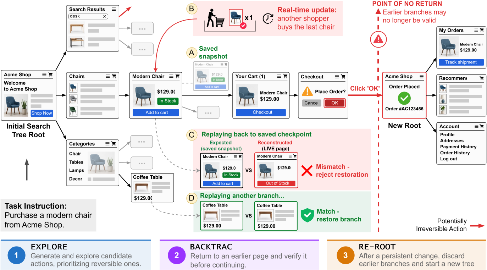
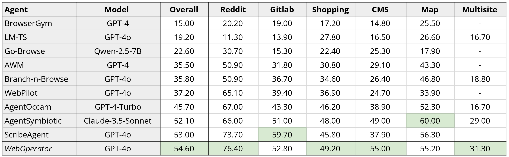

WebOperator
Action-Aware Tree Search for Autonomous Agents in Web Environment
Mahir Labib Dihan 1 *, Tanzima Hashem 1, Mohammed Eunus Ali 2, Md Rizwan Parvez 3
1
Department of Computer Science and Engineering
Bangladesh University of Engineering and Technology (BUET)
2 Faculty of Information Technology, Monash University
3 Qatar Computing Research Institute (QCRI)
*
Work done when working as a remote RA at QCRI. Paper Code WebReplayBench Leaderboard
Overview of WebOperator. The agent organizes candidate actions in a search tree and explores actions that are easier to undo before actions that may permanently change the website. To backtrack, it reconstructs an earlier page and compares it with a saved snapshot. It continues only when the two match. Real-time updates, randomized content, or other external changes can produce a mismatch, in which case the backtracking attempt is aborted. If an executed action permanently changes the website, earlier branches may no longer be valid; WebOperator discards them and starts a new search tree from the resulting page.
Abstract
LLM-based agents often operate in a greedy, step-by-step manner, selecting actions solely based on the current observation without considering long-term consequences or alternative paths. This lack of foresight is particularly problematic in web environments, which are only partially observable—limited to browser-visible content (e.g., DOM and UI elements)—where a single misstep often requires complex and brittle navigation to undo. Without an explicit backtracking mechanism, agents struggle to correct errors or systematically explore alternative paths. Tree-search methods provide a principled framework for such structured exploration, but applying them to the web introduces two challenges: replaying an action sequence may not reconstruct the same page, and some actions may irreversibly change the website. To address these challenges, we introduce WebOperator, a tree-search framework that enables validated backtracking and strategic exploration. Our method incorporates a best-first search strategy that ranks actions by both reward and reversibility, along with a robust backtracking mechanism that verifies reconstructed pages before continuing from them. It prioritizes reversible actions, postpones potentially irreversible ones, and discards earlier branches when its post-execution heuristic flags a possible persistent change. Experiments on WebArena and WebVoyager demonstrate the effectiveness of the framework. On WebArena, it achieves 54.6% task success with gpt-4o, outperforming all prior tree-search methods using the same backbone. Controlled ablations show that naive tree search can reduce performance, whereas action-aware selection and validated backtracking improve corrective search. We further introduce WebReplayBench, a web environment that records which actions actually change the website's state, to evaluate whether WebOperator detects irreversible actions and avoids repeating them during backtracking.
Contributions
- We identify two obstacles to applying tree search on the web: actions that permanently change the website and unreliable reconstruction of previously visited pages.
- We introduce a best-first search strategy that postpones potentially irreversible actions, discards invalid branches after a persistent change, and validates reconstructed pages before backtracking to them.
- We evaluate the framework on WebArena and WebVoyager. WebOperator achieves 54.6% task success on WebArena, outperforming prior tree-search methods using the same gpt-4o backbone. Controlled ablations show that naive tree search can reduce task success, whereas action-aware selection and validated backtracking improve corrective exploration.
- We introduce WebReplayBench, a benchmark with ground-truth labels for database-changing actions and controlled backtracking scenarios. It enables direct evaluation of irreversible-action detection and backtracking safety.
Results

Table 1: Success rate (SR %) comparison on WebArena.
WebReplayBench
Existing web benchmarks such as WebArena evaluate whether an agent completes a task, but they do not label which individual actions change persistent state. WebReplayBench is a self-hosted shopping website with an inbox, to-do list, notes, orders, and account settings, where each API response reports whether its request changed the database. It offers 100 distinct actions, 50 that change the database and 50 that do not, including writes that break REST conventions (writes through GET requests, links, menu items, or autosaving fields) and requests that look destructive but write nothing. Predefined action sequences build search-tree trajectories that reach each action, so the benchmark measures how accurately an agent detects destructive actions and whether it executes them again while backtracking.

The WebReplayBench website.
Example Tree Search

Cite Us
@article{
dihan2025weboperator,
title={WebOperator: Action-Aware Tree Search for Autonomous Agents in Web Environment},
author={Dihan, Mahir Labib and Hashem, Tanzima and Ali, Mohammed Eunus and Parvez, Md Rizwan},
journal={arXiv preprint arXiv:2512.12692},
year={2025}
}